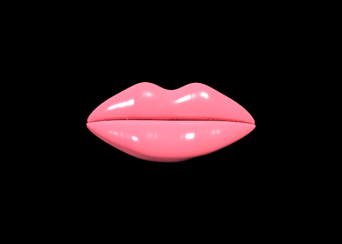
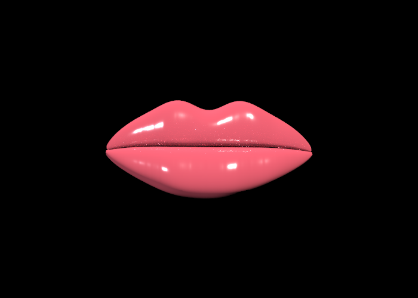
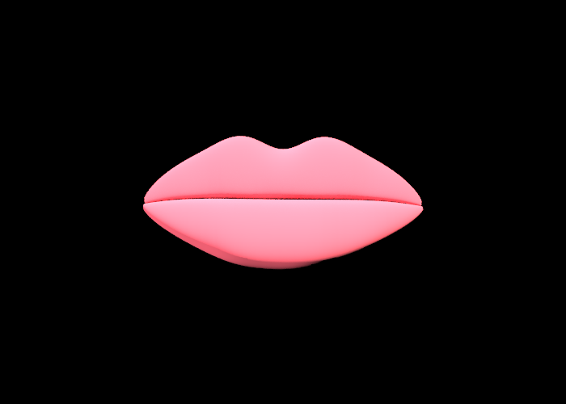

Lip Service: Path Tracing Procedural Lip Gloss
Our project extends the CS184 path tracer to render human lips with more believable geometry and material response. We built a procedural lip mesh, implemented and tuned layered lip BSDFs, and added variant selection so the same scene can render a standard, glossy, or matte version of the lips.
Abstract
Realistic lips are difficult to render because their appearance comes from both shape and material. A simple pink surface can look flat, while a purely specular surface can look like plastic. We approached the problem by combining a custom parametric lip mesh with a layered material model: a soft flesh-like base layer and a thin dielectric gloss layer. The final renderer supports three versions of the same model, selected from the command line: a balanced default lip, a wet glossy lip, and a non-glossy matte lip. Our final results show that small geometric changes, especially the mouth crease, lip roll, Cupid's bow depth, and lower lip volume, have as much visual impact as the shader.
Technical Approach
Rendering Pipeline
The project builds on the CS184 path tracer framework. The renderer loads a Collada
scene, creates primitives, builds a BVH acceleration structure, and estimates radiance
using Monte Carlo path tracing. This connects directly to the course material in
9-11-ray-tracing+acceleration.pptx, 12-integration.pdf, and
13-global-illumination-path-tracing.pdf: rays are intersected against
scene geometry, BSDFs are sampled to choose bounce directions, and recursive radiance is
weighted by the sampled BSDF value, cosine term, probability density, and Russian
roulette survival probability.
We kept the overall path tracing estimator from the class code, but changed the scene
and material system around it. The main path tracer still calls sample_f
on the surface BSDF and divides by the returned PDF. That meant our layered lip material
had to report a consistent mixture PDF whenever it sampled either the flesh layer or the
gloss layer. Otherwise, the lips became unstable: highlights were either too dim,
too bright, or visibly noisy.
Procedural Lip Geometry
Instead of relying on a texture or a downloaded mesh, we generate the lip model in
src/pathtracer/generate_lip.cpp. The mesh is made from three parametric
patches: an upper lip, a lower lip, and a narrow recessed mouth crease. Each patch is
tessellated into triangles and exported into dae/final-project/lips1.dae
with per-vertex normals. The upper lip function shapes the Cupid's bow, side tapering,
central swell, and border recession. The lower lip function adds a larger central
pillow and softer lower border. The mouth crease sits slightly behind both lips, which
makes the line between the upper and lower lip read as depth instead of a bent surface.
This part of the project used ideas from the CS184 mesh lecture,
08-meshes.pptx. Our representation is not a general subdivision surface;
it is a direct procedural triangle mesh. That was a deliberate subset of the mesh
techniques covered in class because the lip shape needed to be easy to tune. Parameters
such as the Cupid's bow dip, vertical folds, central lower-lip bulge, corner recession,
and crease depth gave us artistic control while still producing ordinary indexed
triangle geometry that the existing BVH and path tracer could render.
Layered Lip Material
The lip material is represented as a layered BSDF in src/pathtracer/bsdf.cpp
and loaded from Collada in src/scene/collada/collada.cpp. The base layer is
an approximate BSSRDF-like response that gives the lips their flesh tone. It is not a
full physically exact subsurface scattering simulation, but it approximates the softer
forward-scattered look of skin by modulating diffuse response with roughness and color.
Over that base, we add a dielectric gloss layer inspired by microfacet and Disney-style
shading ideas from 14-material.pdf. Roughness controls highlight width,
thickness controls how much the gloss layer contributes, base color controls the red and
pink body tone, saturation controls color intensity, and IOR affects Fresnel-style edge
reflectance.
We implemented several layered variants during development: an original layered model,
a faster Blinn-Phong-like approximation, and a Disney-inspired layered model. The final
Collada loader constructs DisneyLayeredBSDF for <layered>
materials because it gave the most human-looking balance of soft flesh color and wet
highlights. Compared with the references, our implementation is intentionally simplified:
it does not solve full diffusion profiles for translucent skin and does not use texture
maps. The vertical lip folds and anatomical variation come from geometry, while color and
gloss are procedural material parameters.
Render Variants
The generated Collada scene contains three lip nodes with separate materials:
Lips, GlossyLips, and MatteLips. The application
code in src/application/main.cpp adds a -v option so a user can
render exactly one variant:
/private/tmp/lipgloss-build/pathtracer -v glossy -s 32 -l 8 -m 5 -t 8 -r 700 500 -f glossy.png dae/final-project/lips1.dae
The default material uses roughness 0.055 and thickness 0.50.
The glossy material lowers roughness to 0.018 and raises thickness to
0.82. The matte material raises roughness to 0.65 and reduces
thickness to 0.02. This gave us a compact way to compare material response
without manually editing the scene file before every render.
Problems Encountered
The first major problem was that early renders looked more like a smooth toy object than a human lip. The material was doing most of the work, but the shape did not provide enough anatomical cues. We fixed this by moving more realism into the mesh: a shallower Cupid's bow, raised upper-lip lobes, a fuller lower lip, pinched corners, vertical folds, and a recessed dark crease at the center intersection.
A second problem was the lower-right area of the lip appearing bent or incorrectly oriented. That came from the surface parameterization, normals, and winding interacting with the camera-facing side of the mesh. We addressed it by generating explicit normals from finite-difference tangents, flipping normals that faced away from the camera, and separating the mouth crease into its own narrow patch instead of forcing the lower lip to fold into the same line.
A final problem was workflow. Rendering all three lip variants at once made comparisons
cluttered, and changing materials inside one Collada file was inconvenient. We solved
this by emitting three named nodes and filtering them with the -v option at
runtime. This made the renderer much easier to use for final-image iteration.
Lessons Learned
The biggest lesson was that realism is not only a shader problem. For lips, geometry,
silhouette, and the crease shadow are essential. A physically inspired BSDF can create
convincing highlights, but it cannot rescue a shape that lacks volume or anatomical
structure. We also learned that layered materials require careful sampling. Since the
path tracer divides by the PDF returned from sample_f, the PDF must describe
the same mixture that the BSDF evaluates. Small inconsistencies create large visual
changes in recursive path tracing.
We also learned the value of building tools around the renderer. The procedural generator and variant selector made iteration much faster than editing thousands of vertices or swapping scene files by hand. That let us spend time judging visual results instead of fighting the pipeline.
Results
The final images below were rendered from dae/final-project/lips1.dae at
700 by 500 resolution with 32 samples per pixel, 8 light samples, max ray depth 5, and
8 render threads.



References
- CS184 lecture slides:
08-meshes.pptx,9-11-ray-tracing+acceleration.pptx,12-integration.pdf,13-global-illumination-path-tracing.pdf,14-material.pdf, and15-Color-and-Perception.pdf. - Robert L. Cook and Kenneth E. Torrance, "A Reflectance Model for Computer Graphics," 1982.
- Brent Burley, "Physically-Based Shading at Disney," 2012.
- Henrik Wann Jensen et al., "A Practical Model for Subsurface Light Transport," 2001.